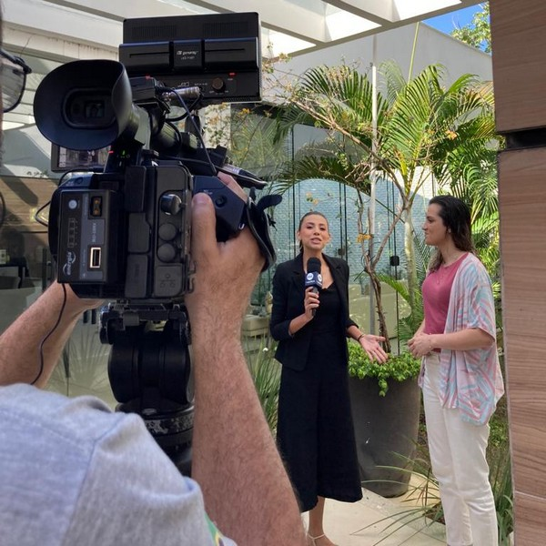
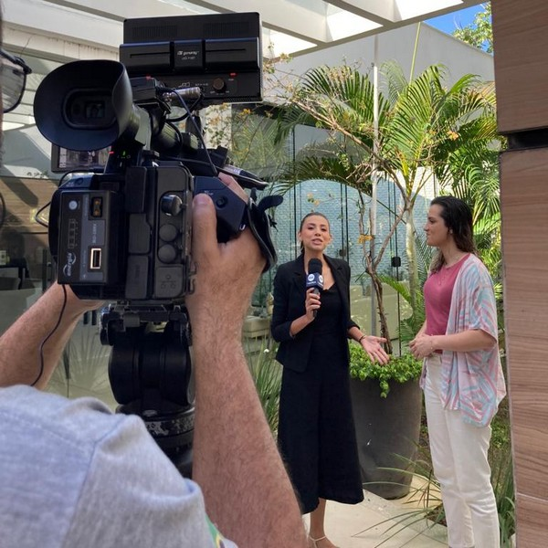
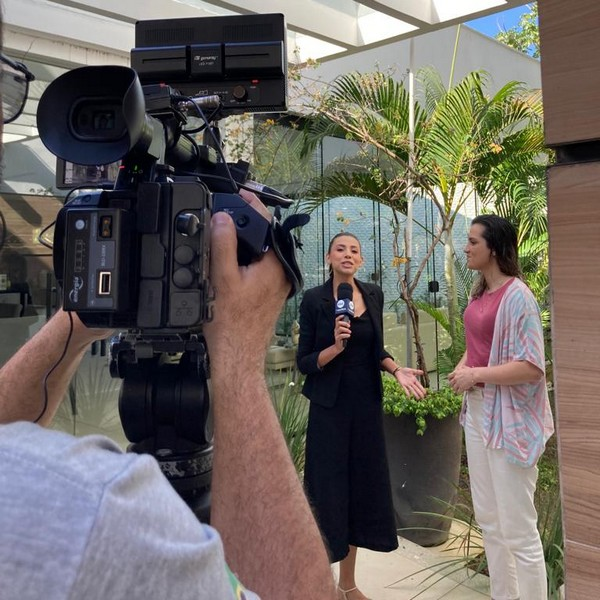

Entrevista na TV
 

Rayra Noronha é natural de Manaus, onde reside atualmente. É graduada em Letras - Língua Inglesa e tem construído uma carreira sólida na área. Ela começou como revisora de textos em Português junto à uma equipe de trabalho voluntário de sua comunidade, além de ter atuado como auxiliar de sala em um centro binacional ligado à embaixada dos EUA. Hoje, ensina inglês em uma renomada instituição de ensino regular da capital amazonense, além de oferecer aulas online para iniciantes. Em 2023, viajou para Londres e explorou outros sete países, além da Inglaterra, enriquecendo sua compreensão da língua e cultura inglesas, obtendo certificação pela Twin English Centre.
“Meu desejo é que a Língua Inglesa mude sua vida, assim como mudou a minha, e conecte você com o mundo, como tem feito comigo ao longo dos últimos anos. Let’s do it!”
Posso te ajudar de duas maneiras: com aulas particulares de inglês online ou orientação para planejar intercâmbio em Londres ou viagem pela Europa. As aulas custam um valor mensal de 300 reais, enquanto a orientação para intercâmbio ou EuroTrip é de 90 reais por hora. Consulte um especialista ao invés de confiar em informações incertas que circulam pela rede.
As aulas ocorrem semanalmente, com duração de 1h15min via Meet. Durante os encontros, os alunos são estimulados no desenvolvimento de suas habilidades básicas de comunicação na Língua Inglesa, que incluem compreensão, fala, leitura e escrita. Para tal, são utilizados recursos audiovisuais e outros. Lembrando que cada aluno é atendido de forma individual e personalizada, com suas demandas pessoais sendo trabalhadas a cada aula. As aulas possuem início imediato mediante pagamento, por isso você paga apenas pelo mês que estudar.
Neste serviço, eu te forneço um guia completo para o planejamento de um intercâmbio em Londres ou de uma viagem de mochilão pela Europa. Vou compartilhar as melhores companhias aéreas para voar pelos países do Reino Unido e da União Europeia, além de dicas sobre como viajar de ônibus entre os países, economizando em bilhetes e taxas de bagagem. Também vou ajudar a criar o melhor itinerário e recomendar os melhores lugares para visitar, além de indicar agências de intercâmbio, escolas na Europa e serviços de passagens aéreas com valores mais em conta.
“O objetivo dos estudos é buscar alternativas que te façam ir além das crenças que limitam a aprendizagem. E a partir desse pensando, através de um post no LinkedIn, ao ver a recomendação de um aluno da querida Rayra, iniciei a minha tentativa de aprender inglês, e de cara me deparei com a sensibilidade dela, de ensinar adequando suas técnicas de ensino conforme as limitações dos seus alunos”, Marciana Carneiro – Psicológa, aluna online da Teacher Rayra
“Tive a oportunidade de trabalhar ao lado da Rayra por um tempo, e gostaria de destacar o quanto seu trabalho como professora de inglês é notável. Ela é realmente impressionante na maneira como ensina inglês, utilizando métodos de ensino inovadores que mantêm os alunos envolvidos e motivados. Além disso, sua paciência e dedicação são admiráveis, pois sempre está disposta a ajudar os alunos a superar desafios e alcançar sucesso no aprendizado do idioma”, Paulo Jr. – Engenheiro da Computação e Professor de Robótica Educacional.
